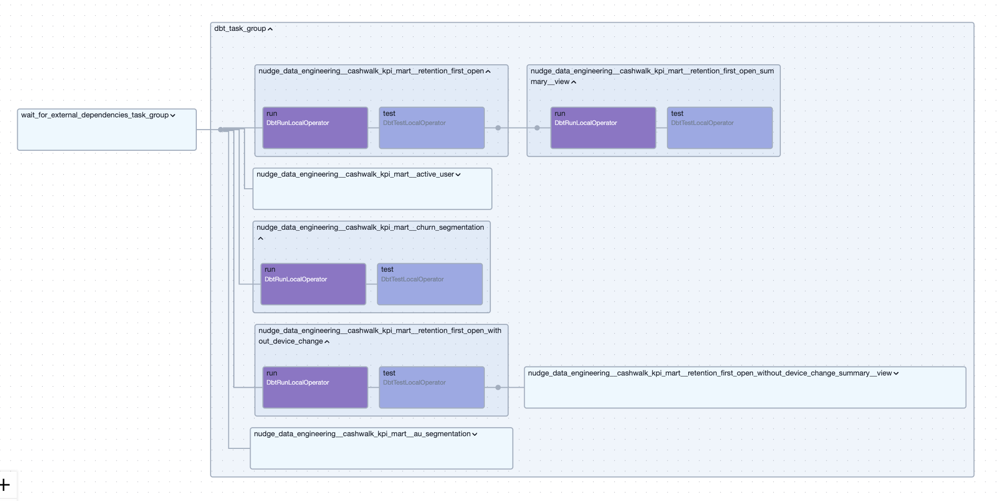
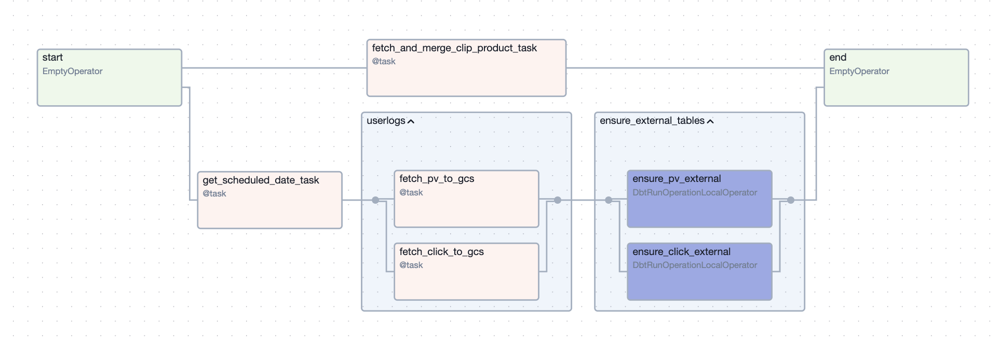

EXPERIENCE 01 / DATA ENGINEERING
Nudge Healthcare
운영 데이터를
의사결정 가능한 데이터로 만들었습니다.
- 역할 / 작업
- Data Engineering Intern
- 기간
- 2026.04 — 2026.07
Case 01 · AU/Churn SQL 성능 개선 결과
slot_ms 감소
20일 백필 기준 · 약 14배shuffle 감소
20일 백필 기준 · 약 7.8배mismatch
기존 결과 40행 · 셀 단위 비교CASE 01 / AU · CHURN SQL 성능 개선
장기 백필의 fan-out을 줄이고,
결과와 처리 비용을 검증했습니다.
쿼리 최적화 · 20일 백필 비용 검증 · 결과 정합성 비교
배경 / WHY · CONTEXT
과거 접속과 미래 재방문을 함께 계산
AU·Churn 지표는 기준 날짜의 과거 접속 여부와 미래 재방문 여부를 계산해야 했습니다. 기존에는 BETWEEN 범위 JOIN으로 기간 조건을 적용했습니다.
문제 / PROBLEM
장기 백필에서 커지는 중간 결과
장기 백필 시 범위 JOIN의 fan-out을 확인했습니다. 기간 조건에 맞는 행들이 결합되며 중간 결과가 늘어나는 구조를 개선 대상으로 삼았습니다.
가설 / HYPOTHESIS
기간 조건을 Window로 계산하면 어떨까?
검증할 가설은 결과를 유지하면서 범위 JOIN의 fan-out과 처리 비용을 줄일 수 있는지였습니다.
선택 / DECISION
행을 결합하는 대신 기간 범위로 계산
같은 과거 접속·미래 재방문 조건을 Window Function으로 계산하도록 선택했습니다. 날짜는 UNIX_DATE로 변환해 기간 계산에 사용했습니다.
CASE 01 / 구현 · IMPLEMENTATION
범위 JOIN을 Window 계산으로 바꿨습니다.
기존 BETWEEN 범위 JOIN을 UNIX_DATE + Window Function으로 리팩터링했습니다. 아래는 AU/Churn을 포함한 KPI mart의 Airflow DAG입니다.

CASE 01 / 검증 → 결과
결과를 비교하고, 처리 비용을 확인했습니다.
검증 / VERIFICATION
기존 결과 40행을 셀 단위로 비교
결과 정합성은 기존 결과 40행을 셀 단위로 비교했습니다. 처리 비용은 20일 백필 조건에서 slot_ms와 shuffle을 비교했습니다.
결과 / RESULT
비교한 40행에서 mismatch 0, 처리 비용 감소
비교한 40행에서 mismatch 0을 확인했고, 20일 백필 기준 slot_ms는 약 14배, shuffle은 약 7.8배 감소했습니다. 장기 백필이라는 실제 처리 조건에 맞춰 구조를 바꾸고 결과와 비용을 함께 검증했습니다.
CASE 02 / SHORT-FORM COMMERCE KPI PIPELINE
데이터 연결을 넘어,
KPI의 산출 기준까지 설계했습니다.
데이터 파이프라인 · KPI 정의 · 원본 보존 · 업무 맥락
배경 / WHY · CONTEXT
콘텐츠 노출이 구매로 이어지는지 보기 위해
Clip exposure → purchase 전환 지표를 만들기 위해 외부 API 데이터와 Commerce DB를 연결해야 했습니다.
문제 / PROBLEM
주문 단위 쿠폰을 상품별로 어떻게 반영할까?
데이터 연결뿐 아니라 주문 단위 쿠폰의 상품별 배분 기준이 필요했습니다. 같은 원천 데이터라도 산출 기준에 따라 현업의 판단이 달라질 수 있기 때문입니다.
가설 / HYPOTHESIS
상품 가격 비율을 배분 기준으로 삼기
상품 가격이 주문에서 차지하는 비율에 맞춰 쿠폰을 배분하면, 주문 단위 할인을 상품별 지표에 반영할 기준을 세울 수 있다고 봤습니다.
선택 / DECISION
원본은 보존하고, 산출 기준은 mart에 반영
주문 쿠폰은 상품별 가격 비율로 배분했습니다. API raw 데이터는 GCS에 저장하고, Commerce DB와 함께 BigQuery / dbt 기반 mart를 구성했습니다.
CASE 02 / 구현 · IMPLEMENTATION
Raw 적재에서 분석용 mart까지 연결했습니다.
- 외부 API
- GCSAPI raw 적재
- BigQuery / dbtCommerce DB 결합 · Mart
외부 API의 raw 데이터를 GCS에 저장하고, Commerce DB와 함께 BigQuery / dbt 기반 mart를 구성했습니다.

CASE 02 / 검증 기준 → 결과
데이터 품질에 업무 맥락과 산출 기준을 포함했습니다.
검증 기준 / VERIFICATION CRITERIA
원본 데이터와 쿠폰 배분 기준
산출 결과를 확인할 때의 기준은 GCS에 저장한 API raw 데이터와 상품별 가격 비율에 따른 쿠폰 배분입니다.
결과 / RESULT
Clip exposure → purchase 전환 지표 구성
API와 Commerce DB를 연결해 노출부터 구매까지의 전환 지표를 구성했습니다. 같은 데이터도 산출 기준에 따라 다른 판단으로 이어질 수 있어, 업무 맥락과 산출 기준까지 데이터 품질의 일부로 보게 됐습니다.